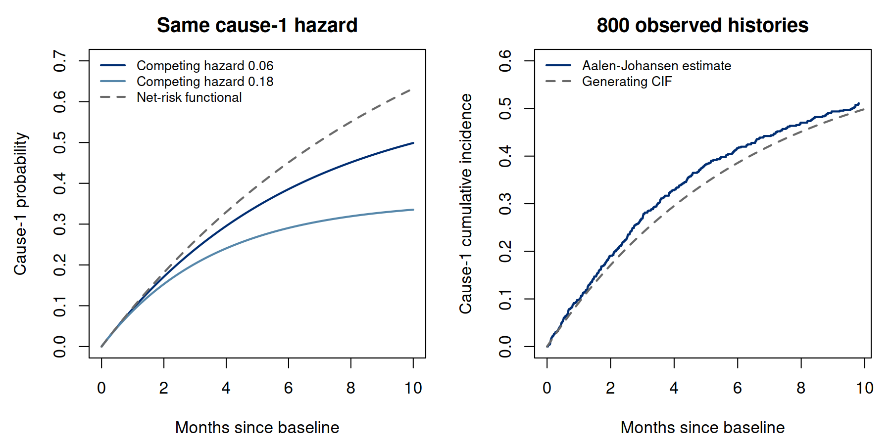

Chapter 10. Competing risks and first-event probabilities
10.1 First-event types and their probabilities
Until now, an event definition selected one endpoint and censoring determined whether its time was observed. A clinical study may contain another endpoint that makes the selected event impossible. Death before a first nonfatal cardiovascular event is an example. Death is an observed change in a person’s clinical state; it is not simply a lost opportunity to obtain their eventual cardiovascular-event time. This difference changes the statistical target before it changes the estimator.
Suppose every participant begins in an event-free state. Let be the time of the first event of any relevant type, and let identify its type. Define (10.1) The cumulative incidence function, or CIF, is the actual probability of a type- first event by the horizon in this population. One minus is instead the probability of any of the specified first-event types; it sums the cause-specific CIFs. The same time origin, eligibility criteria, and competing-event definitions must accompany every comparison. A recurrence after an earlier event is not a first event and requires a different state structure.
For right-censored observations, we retain but replace the binary indicator by a cause code if and otherwise. The convention processes events before censoring at tied recorded times. Estimation below assumes independent subjects, accurately classified event types, and independent censoring of the joint event history, with observable follow-up support at the reported horizons. Conditional censoring assumptions require corresponding conditioning or adjustment; an unadjusted marginal estimator does not automatically handle covariate-dependent selection.
Competing risks extend the single-endpoint framework. We connect the absolute-risk calculation in Section 7.8 to a setting in which different events remove people from the same risk set. We begin with two absorbing first-event types because their probability accounting can be checked by hand.
10.2 Cause-specific hazards determine all the first-event probabilities
For continuous event times and , define (10.2) These are rates among people who are still free of every first-event type. Their sum is the all-cause event hazard because mutually exclusive event types partition the possible exits over a small interval. Thus, with , (10.3) For the first formula, we apply the survival–hazard argument in Chapter 2 to the sum of exit rates. For the second, we multiply the chance of reaching time event-free by the local type- exit rate, then accumulate these event probabilities over time. Differentiation gives ; summing these derivatives gives and verifies probability conservation. Neither formula assumes independent latent times for the different causes.
The factor is essential. A type-1 cause-specific hazard can stay unchanged while its cumulative incidence changes because another cause removes people before they can experience type 1. Rates conditional on survival and unconditional event probabilities describe different populations. This distinction is especially relevant when comparing clinical groups whose mortality rates differ.
For constant rates and , (10.4) At per month, five-month type-1 risk is when and when . The type-1 rate among event-free people is identical in both models. Its lower probability in the second model is caused mathematically by fewer people remaining available to experience that event, not by a lower type-1 hazard.
Run the complete R example
Dependencies: base R, survival. This complete block includes the data, setup and calculations. Run it in a fresh R session. Short code excerpts above explain individual steps; this block supplies their shared setup. This block prints its calculations and does not write files.
Complete R example
# First-event competing risks: direct probability calculations and standard R fits.
# Author: Lap Sum Chan.
# Dependencies: base R and survival. Run with Rscript from any directory.
# All data and results remain in memory; the script prints its main calculations.
# Assumptions: independent people, two absorbing first-event types, independent
# censoring, and adequate observation support. Everyone enters at time zero.
options(width = 105, digits = 10)
library(survival)
# Exact twelve-person teaching records; cause labels are hypothetical additions.
cohort <- data.frame(
id = LETTERS[1:12],
time = c(1, 2, 2, 3, 4, 4, 5, 6, 6, 7, 8, 8),
status = c(1L, 1L, 0L, 0L, 1L, 1L, 0L, 1L, 0L, 0L, 1L, 0L),
known.at.5 = c(TRUE, TRUE, FALSE, FALSE, TRUE, TRUE,
TRUE, TRUE, TRUE, TRUE, TRUE, TRUE),
event.by.5 = c(1L, 1L, NA_integer_, NA_integer_, 1L, 1L,
0L, 0L, 0L, 0L, 0L, 0L)
)
cohort$cause <- c(1L, 2L, 0L, 0L, 1L, 2L, 0L, 1L, 0L, 0L, 2L, 0L)
stopifnot(nrow(cohort) == 12L, sum(cohort$status) == 6L,
sum(cohort$time) == 56,
all((cohort$cause > 0) == (cohort$status == 1)))
# Aalen--Johansen recursion: add each cause's incidence using pre-event survival.
# Censoring at the same recorded time remains in the event denominator.
aj <- function(time, cause) {
stopifnot(length(time) == length(cause), length(time) > 0L,
all(is.finite(time)), all(time >= 0), all(cause %in% 0:2))
tt <- sort(unique(time[cause > 0]))
S <- 1
F <- c(0, 0)
out <- data.frame(time = 0, Y = length(time), d1 = 0, d2 = 0,
S = 1, F1 = 0, F2 = 0)
for (t in tt) {
Y <- sum(time >= t)
d <- c(sum(time == t & cause == 1), sum(time == t & cause == 2))
F <- F + S * d / Y
S <- S * (1 - sum(d) / Y)
out <- rbind(out, data.frame(time = t, Y = Y, d1 = d[1], d2 = d[2],
S = S, F1 = F[1], F2 = F[2]))
}
stopifnot(max(abs(out$S + out$F1 + out$F2 - 1)) < 1e-12,
all(diff(out$S) <= 1e-12),
all(diff(out$F1) >= -1e-12), all(diff(out$F2) >= -1e-12))
out
}
hand <- aj(cohort$time, cohort$cause)
# Standard workflow: a factor event indicator requests first-event probabilities.
fstatus <- factor(cohort$cause, levels = 0:2,
labels = c("censor", "cause1", "cause2"))
fit <- survfit(Surv(cohort$time, fstatus) ~ 1)
idx <- match(hand$time[-1], fit$time)
stopifnot(!anyNA(idx))
survfit.error <- max(abs(fit$pstate[idx, ] - as.matrix(hand[-1, c("S", "F1", "F2")])))
stopifnot(survfit.error < 1e-12)
p5 <- hand[findInterval(5, hand$time), c("S", "F1", "F2")]
p8 <- hand[findInterval(8, hand$time), c("S", "F1", "F2")]
stopifnot(max(abs(unlist(p5) - c(.625, .1875, .1875))) < 1e-12,
max(abs(unlist(p8) - c(.25, .3125, .4375))) < 1e-12)
# Treating cause 2 as censoring produces a cause-1 net-risk functional, not its CIF.
net <- survfit(Surv(time, cause == 1) ~ 1, data = cohort)
net5 <- 1 - summary(net, times = 5)$surv
net8 <- 1 - summary(net, times = 8)$surv
# Constant cause-specific hazards and the complete interaction grid.
cif <- function(t, a, b) a / (a + b) * (1 - exp(-(a + b) * t))
a <- .10
times <- seq(0, 10, by = .05)
competing <- seq(0, .30, by = .01)
grid <- do.call(rbind, lapply(competing, function(b) data.frame(
competing.hazard = b, time = times, cause1.hazard = a,
survival = exp(-(a + b) * times), F1 = cif(times, a, b), F2 = cif(times, b, a),
net.cause1 = 1 - exp(-a * times)
)))
grid.schema <- data.frame(
column = names(grid),
meaning = c("Cause-2 hazard per month", "Months since baseline",
"Fixed cause-1 hazard per month", "Alive and event-free probability",
"Cause-1 cumulative incidence", "Cause-2 cumulative incidence",
"Cause-1 net-risk functional")
)
grid.mass.error <- max(abs(grid$survival + grid$F1 + grid$F2 - 1))
stopifnot(nrow(grid) == 6231L, grid.mass.error < 1e-12,
all(grid$F1 <= grid$net.cause1 + 1e-12))
# A cause-1 hazard ratio below one can coexist with greater cause-1 incidence.
contrast <- data.frame(group = c("reference", "comparison"),
a = c(.10, .08), b = c(.30, .01))
contrast$F1.5 <- mapply(function(a, b) cif(5, a, b), contrast$a, contrast$b)
stopifnot(contrast$a[2] / contrast$a[1] < 1,
contrast$F1.5[2] > contrast$F1.5[1])
# Exact probability propagation under piecewise-constant cause-specific hazards.
step.risk <- function(width, rates) {
S <- 1
F <- rep(0, ncol(rates))
trace <- matrix(c(0, S, F), 1)
for (j in seq_along(width)) {
L <- sum(rates[j, ])
oldS <- S
if (L > 0) F <- F + oldS * rates[j, ] / L * (-expm1(-L * width[j]))
S <- oldS * exp(-L * width[j])
trace <- rbind(trace, c(sum(width[1:j]), S, F))
}
colnames(trace) <- c("time", "S", "F1", "F2")
stopifnot(max(abs(rowSums(trace[, -1, drop = FALSE]) - 1)) < 1e-12)
trace
}
width <- c(2, 2, 1)
rates <- rbind(c(.10, .06), c(.15, .06), c(.15, .10))
step <- step.risk(width, rates)
ends <- c(0, cumsum(width))
Hprev <- c(0, cumsum(rowSums(rates) * width))
num <- sum(vapply(seq_along(width), function(j) integrate(function(u)
exp(-Hprev[j] - sum(rates[j, ]) * (u - ends[j])) * rates[j, 1],
ends[j], ends[j + 1], rel.tol = 1e-12)$value, numeric(1)))
piecewise.error <- abs(num - tail(step[, "F1"], 1))
stopifnot(piecewise.error < 1e-10)
# Independent latent clocks construct this simulation; their independence is
# not required by the general first-event CIF definition or AJ estimator.
set.seed(675415)
n <- 800L
T1 <- rexp(n, a)
T2 <- rexp(n, .06)
T <- pmin(T1, T2)
J <- ifelse(T1 < T2, 1L, 2L)
C <- pmin(rexp(n, .04), 10)
X <- pmin(T, C)
cause <- ifelse(T <= C, J, 0L)
dat <- data.frame(id = seq_len(n), time = X, cause = cause)
simaj <- aj(X, cause)
integration.error <- 0
for (b in c(0, .06, .18, .30)) for (t in c(1, 5, 10)) {
val <- integrate(function(u) exp(-(a + b) * u) * a,
0, t, rel.tol = 1e-12)$value
integration.error <- max(integration.error, abs(val - cif(t, a, b)))
stopifnot(abs(val - cif(t, a, b)) < 1e-10)
}
set.seed(6754151)
B <- 200000L
x1 <- rexp(B, a)
x2 <- rexp(B, .06)
freq <- mean(x1 <= 5 & x1 < x2)
target <- cif(5, a, .06)
mcse <- sqrt(target * (1 - target) / B)
stopifnot(abs(freq - target) < 5 * mcse)
first.event.summary <- data.frame(
quantity = c("cohort.F1.5", "cohort.F2.5", "cohort.S.5",
"cohort.F1.8", "cohort.F2.8", "cohort.S.8",
"cohort.cause1.net.5", "cohort.cause1.net.8",
"model.F1.5.b006", "model.F1.5.b018", "model.cause1.net.5",
"simulated.events1", "simulated.events2", "simulated.censored",
"simulated.AJ.F1.5", "complete.frequency", "complete.mcse"),
value = c(p5$F1, p5$F2, p5$S, p8$F1, p8$F2, p8$S, net5, net8,
cif(5, a, .06), cif(5, a, .18), 1 - exp(-a * 5),
sum(cause == 1), sum(cause == 2), sum(cause == 0),
simaj$F1[findInterval(5, simaj$time)], freq, mcse)
)
cat("First-event competing risks: reproducible teaching calculations\n")
cat(R.version.string, "\n")
cat("survival package version: ", as.character(packageVersion("survival")), "\n\n", sep = "")
cat("Twelve-person cohort: direct Aalen--Johansen recursion\n")
print(hand, row.names = FALSE)
cat("\nMain first-event numerical summary\n")
print(first.event.summary, row.names = FALSE)
cat("\nLower cause-1 hazard, greater cause-1 cumulative incidence at month 5\n")
print(contrast, row.names = FALSE)
cat("Cause-1 hazard ratio: ", contrast$a[2] / contrast$a[1], "\n", sep = "")
cat("\nPiecewise-constant cause-specific hazards: exact cumulative probabilities\n")
print(step)
cat(sprintf("\nChecks passed: survfit agreement error %.3g; grid mass error %.3g.\n",
survfit.error, grid.mass.error))
cat(sprintf("Interaction grid: %d rows, %d competing hazards, %d horizons.\n",
nrow(grid), length(competing), length(times)))
cat(sprintf("Numerical integration error: constant hazards %.3g; piecewise hazards %.3g.\n",
integration.error, piecewise.error))
cat(sprintf("Complete-observation frequency %.6f; generating CIF %.10f; MCSE %.10f.\n",
freq, target, mcse))
cat("\nInterpretation: hypothetical cause labels teach probability accounting.\n")
cat("Net risk differs from observed-world CIF; this code does not identify a causal intervention.\n")
cat("The 800-person estimate is one simulated realization; the large clock simulation\n")
cat("checks its generating probability, not confidence-interval coverage.\n")
This excerpt shows a step inside the preceding complete R example; it uses that block’s data and setup.
cif <- function(t, a, b) a/(a+b) * (1-exp(-(a+b)*t))
c(cif(5, .10, .06), cif(5, .10, .18))
# 0.3441694 0.2690725
integrate(function(u) exp(-(.10+.06)*u)*.10, 0, 5)$value
# 0.3441694The complete R example compares numerical integration with this closed form. Increasing lowers because the integrand decreases for every . This argument is more informative than inferring the direction from a plotted example alone.
10.3 Why one minus cause-specific Kaplan–Meier answers another question
Treating type-2 events as censoring in a type-1 analysis leads to the functional (10.5) This removes the type-2 cumulative hazard from the survival factor. We have kept but changed the survival calculation, so the resulting quantity generally differs from both the any-event probability and the observed type-1 CIF. It is not unless relevant competing hazards vanish. In the constant-rate example it is , which exceeds both actual five-month CIFs. Calling the functional a “net risk” does not establish a causal interpretation: eliminating death could change the nonfatal-event hazard rather than retain the observed unchanged.
There is a legitimate use of the same cause-specific coding. To estimate a type-1 hazard or a cause-specific Cox coefficient, people experiencing type 2 cease to be at risk for type 1 at their event times. Coding their rows as censored permits ordinary software to form precisely those risk sets. The resulting cause-specific rate is defined among the remaining event-free people. This construction does not require statistical independence of hypothetical latent type-1 and type-2 event times. It still requires suitable observation-censoring and model assumptions.
The binary coding forms the intended cause-specific risk sets. The interpretation changes when we convert its cumulative hazard to : that functional omits competing exits and is not the observed-world type-1 probability. For regression-based absolute risks, estimate all relevant cause-specific hazards and integrate them together in (10.3). A type-1 hazard ratio alone does not determine a type-1 risk contrast.
10.4 Convert fitted rates to a horizon prediction
The baseline cumulative hazard in Section 7.8 turned a Cox coefficient into an absolute survival prediction. With competing events, that calculation must include a cause-specific model for every exit that matters to the target. For a fixed profile , one possible specification is . Coefficients, baseline hazards, and the common time origin jointly determine . Different causes need not have equal coefficients, equal baseline shapes, or the same model specification.
A simple counterexample shows why a relative rate does not order risks. Suppose a reference group has , while a comparison group has . The type-1 hazard ratio is , yet five-month type-1 risks are and , respectively. In the comparison group, many more people survive long enough to experience type 1. This is a comparison of two joint event-time laws, not evidence that preventing deaths would necessarily cause additional type-1 events.
For piecewise-constant fitted rates over an interval of width , let be the total exit rate in interval . This local has units of inverse time; it is not a likelihood or a loss. Exact propagation from the interval’s left endpoint is (10.6, 10.7) If , survival and all CIFs stay unchanged. The factor is the probability of an exit during the interval conditional on reaching it, and allocates exits among causes. These increments preserve total probability exactly. They use exponential propagation within a modeled interval, whereas the empirical AJ recursion uses estimated jump probabilities; the two procedures should not be mixed indiscriminately.
This excerpt shows a step inside the preceding complete R example; it uses that block’s data and setup.
L <- sum(rates[j, ])
oldS <- S
if (L > 0) F <- F + oldS*rates[j, ]/L * (-expm1(-L*width[j]))
S <- oldS*exp(-L*width[j])Using rates for two months, for another two, and for a final month gives , , and . This is a specified piecewise-rate model, not a fit to the twelve-person records. Numerical integration of over each interval agrees with the recursion. To interpret these as fitted population probabilities in an actual study, we would also need adequate follow-up, supported covariate profiles, uncertainty assessment, and appropriate cause-specific and observation models. Probability conservation checks the arithmetic; it cannot correct wrong cause labels or a misspecified rate model.
10.5 Aalen–Johansen estimation from risk-set increments
Let be the distinct observed first-event times, the count event-free and under observation immediately before , and the count of type- events there. Censoring removes people from later risk sets, while competing events remove them from every first-event risk set. The estimated cause-specific increment is . Define (10.8, 10.9) This is the first-event version of the Aalen–Johansen product-integral estimator [11], [12]. The event-free probability available just before a jump is distributed among the different exit types. Using post-jump survival in the CIF increment would allocate too little probability.
For each jump, the loss in equals the sum of gains in the CIFs. Therefore exactly, including tied events. The estimator remains constant between event times. With empirical jumps, its survival is a product of , not exactly the exponential of the summed Nelson–Aalen cumulative hazards. The continuous population identity and its product-integral estimate must not be interchanged when jumps are appreciable.
10.5.1 Return to the twelve-person cohort
Extend the twelve-person teaching cohort by assigning type 1 to events A, E, and H, and type 2 to B, F, and K. Keep its observation times and censoring indicators unchanged. The cause labels are hypothetical: they let us compare targets using the same risk sets. The calculations are shown in Table 10.1.
| Time | |||||
|---|---|---|---|---|---|
| 1 | 12 | 1 | 0 | 0.9167 | (0.0833, 0.0000) |
| 2 | 11 | 0 | 1 | 0.8333 | (0.0833, 0.0833) |
| 4 | 8 | 1 | 1 | 0.6250 | (0.1875, 0.1875) |
| 6 | 5 | 1 | 0 | 0.5000 | (0.3125, 0.1875) |
| 8 | 2 | 0 | 1 | 0.2500 | (0.3125, 0.4375) |
At month 4, eight people are at risk and one event of each type occurs. Just before that time, . Each CIF increases by , and survival becomes . At month 5, which contains only a censoring exit, the three probabilities remain . Censoring changes subsequent denominators; it does not itself reallocate probability to an event type.
At month 8 the final allocation is , , and . A cause-1 Kaplan–Meier calculation instead produces net-risk estimates at month 5 and at month 8. Their discrepancy is a target difference, even though both use valid risk sets for their respective calculations.
This excerpt shows a step inside the preceding complete R example; it uses that block’s data and setup.
S <- 1; F <- c(0, 0)
for (t in sort(unique(time[cause > 0]))) {
Y <- sum(time >= t)
d <- c(sum(time == t & cause == 1),
sum(time == t & cause == 2))
F <- F + S*d/Y # use survival BEFORE the jump
S <- S*(1-sum(d)/Y)
stopifnot(abs(S+sum(F)-1) < 1e-12)
}The full script records every intermediate value. It then creates a
factor whose first level denotes censoring and verifies the entire
recursion against survival::survfit with a multistate
Surv response. The factor’s ordering is part of the input
specification; an integer code interpreted as an ordinary binary event
indicator would be a different analysis.
This excerpt shows a step inside the preceding complete R example; it uses that block’s data and setup.
fstatus <- factor(cause, levels=0:2,
labels=c("censor", "cause1", "cause2"))
fit <- survival::survfit(survival::Surv(time, fstatus) ~ 1)
# fit$pstate contains event-free and the two absorbing-state probabilities.10.6 Simulation and an interactive comparison
We now generate a separate cohort of 800 independent people; these are not the twelve participants with hypothetical cause labels. Independent exponential clocks have rates 0.10 and 0.06 per month, independent censoring has rate 0.04, and observation closes at month 10. Taking the minimum of the event clocks is one convenient way to realize the stated cause-specific hazards. It is a simulation device, not an identifying assumption for the observed-law CIF.
With seed 675415, the sample contains 363 type-1 events, 186 type-2 events, and 251 censored observations. Its five-month type-1 AJ estimate is , compared with the generating probability . Sampling variability remains visible in a cohort of 800 people. The computation checks risk-set ordering, monotonicity, and probability conservation rather than forcing a fitted curve to reproduce its generating target.


A separate complete-observation simulation of 200,000 independent clock pairs estimates the five-month probability as , with model-based Monte Carlo standard error . This supports the implementation of the generating model; it is not proof of an estimator’s asymptotic theorem or a confidence interval for the smaller cohort. Independent numerical integration checks the CIF formula at several rates and horizons.
The interaction varies
from 0 to 0.30 while keeping
.
How should
,
,
,
and
respond? The integral for
gives us a prediction to compare with the curves. The curves and
displayed horizon probabilities use the checked R calculation’s grid. Their static counterpart is the
left panel of Figure 10.1.
The lesson is the distinction between a conditional rate and an event
probability, not a claim that changing competing mortality is a
well-defined clinical intervention.
Explore: one hazard, different observed risks
Predict first: keep the cause-1 hazard at 0.10 per unit time and increase the competing hazard. Does the probability of experiencing cause 1 stay fixed? Compare the actual cumulative incidence with a hypothetical net-risk calculation.
Cumulative incidence describes events in the presence of competing causes. The net-risk curve removes the competing hazard mathematically; treating competing events as ordinary censoring does not make that curve the observed cause-1 probability, nor establish a causal intervention effect.
Static counterpart: the constant-hazard derivation, competing-risk table, and comparison figure in this chapter. The model assumes two mutually exclusive first events with constant cause-specific hazards.
A cause-specific rate and a first-event probability are distinct summaries. We calculated any-event survival and allocated its losses among causes, using both modeled rates and observed risk-set increments. At a stated horizon, the CIF gives the probability of a first event of the specified cause, whereas one minus survival gives the probability of any of the specified first events. The net-risk functional removes competing exits from the survival calculation. The interpretation depends on the event definitions and observation assumptions, as well as the hazard model for the model-based calculations.
10.7 Exercises
The competing rate changes absolute incidence. Let two mutually exclusive first-event types have constant cause-specific hazards and in an event-free population, with accurate cause ascertainment. Derive event-free survival and both cumulative-incidence functions. Prove that type-1 cumulative incidence decreases with at fixed . Calculate five-month type-1 incidence for and or , and compare with the net-risk functional . State which calculation describes actual first-event risk.
Allocate a jump from the preceding survival. Use observed follow-up months and statuses , where 0 denotes right censoring and 1–2 are first-event types. Everyone enters at zero; same-time events precede censoring. Derive the Aalen–Johansen first-event updates at months 4 and 8 and show algebraically that after every jump. Calculate the unallocated mass at month 4 if each CIF increment incorrectly uses post-jump instead of pre-jump survival.
A net-risk curve answers another question. For the preceding cohort, treat type-2 exits as censored in a cause-1 Kaplan–Meier calculation. Compute its net-risk functional at month 8 and compare it with the type-1 Aalen–Johansen CIF. Explain why competing-event removal can be used in a cause-specific Cox partial likelihood, but does not make one minus the resulting cause-specific survival equal actual incidence. State what additional assumptions would be needed to interpret the net-risk functional under a causal elimination of type 2.
Hazard ordering need not order incidence. Consider two event-free populations with constant type-1/type-2 hazards and per month. Under independent observation censoring and accurate cause ascertainment, calculate their five-month type-1 CIFs. Determine the type-1 cause-specific hazard ratio and CIF ordering. Explain why this is a counterexample to the claim that a smaller type-1 hazard necessarily gives smaller type-1 incidence when competing hazards differ. No independence of hypothetical latent failure times is required for the CIF identity.